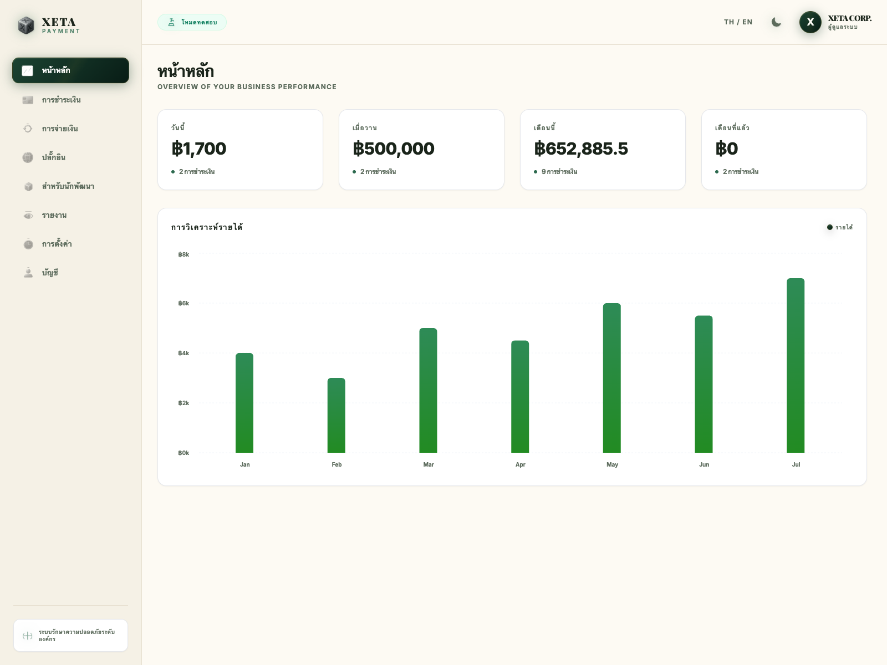

หน้าหลัก
ภาพรวมธุรกิจแบบเรียลไทม์
ลูกค้าจะเห็นยอดสำคัญของธุรกิจทันที เช่น วันนี้ เมื่อวาน เดือนนี้ และเดือนก่อน พร้อมกราฟรายได้ที่ช่วยดูแนวโน้มการเติบโตได้อย่างรวดเร็ว
- เหมาะสำหรับผู้บริหารที่ต้องการดูสุขภาพของธุรกิจในเวลาอันสั้น
- ช่วยให้ตัดสินใจเรื่องยอดขายและปริมาณธุรกรรมได้ง่ายขึ้น